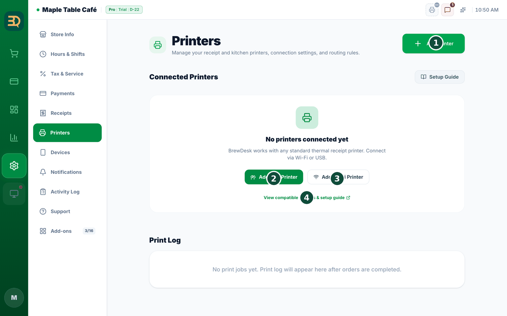
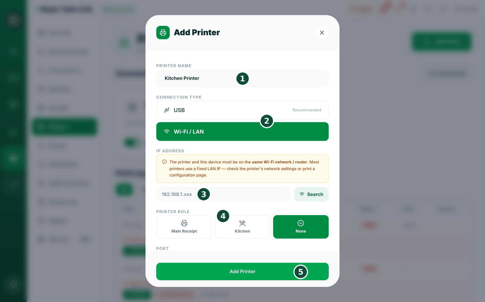
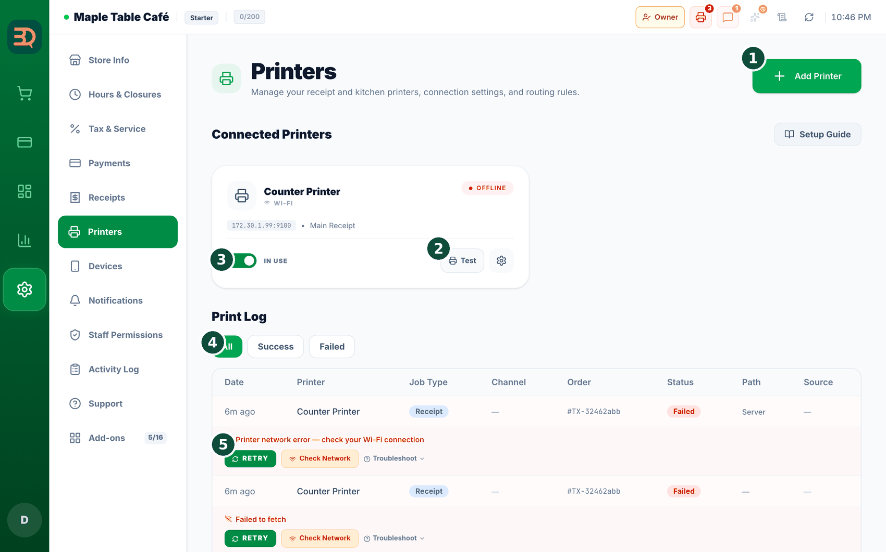
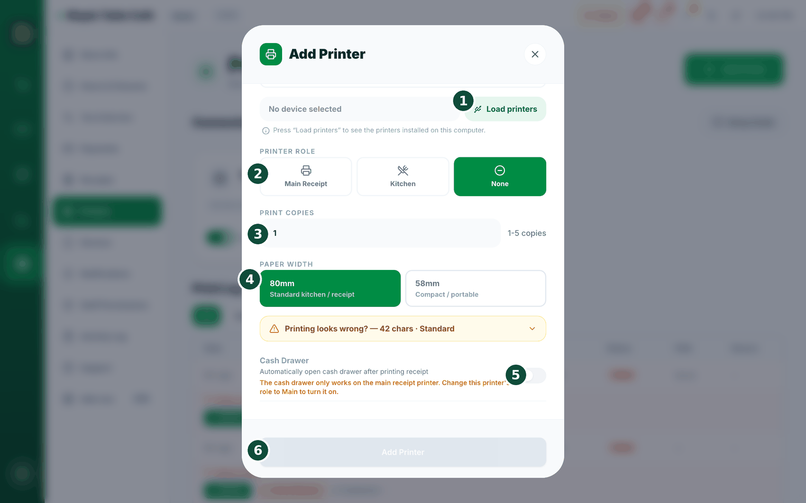
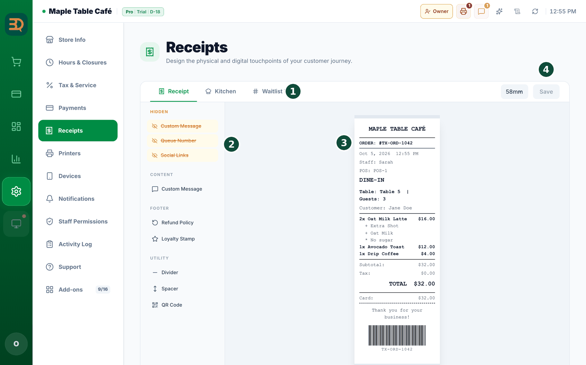
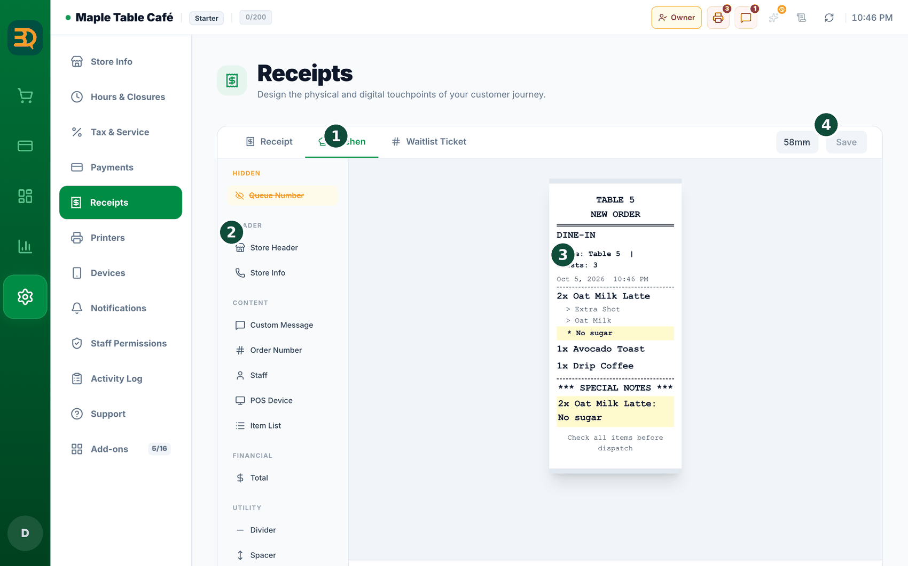
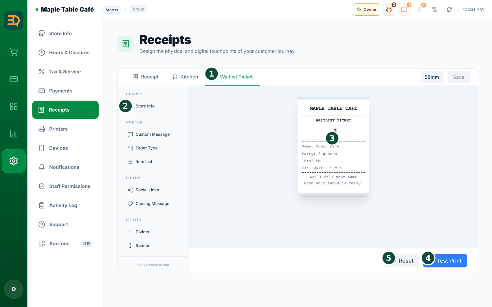

BrewDesk can print receipts for customers and tickets for the kitchen. Let's add a printer step by step. And if a printer ever jams, your order is still safe.
Watch the video
Set up a USB receipt printer (Windows & Mac)
Connect a Wi-Fi/LAN receipt printer
Send drinks to the bar printer and food to the kitchen
Print one menu item on two printers (bar + kitchen)
Reprint a ticket the kitchen missed
Print receipts and kitchen tickets on one printer (+ paper width fix)
Short videos
Drinks to the bar, food to the kitchen
One item, two printers
Kitchen missed a ticket? Reprint it
One printer for receipt + kitchen ticket
Receipt text cut off? Match the paper width

Printers① Add Printer · ② A connected printer card (status, role, Test) · ③ Setup Guide · ④ Print Log

Add Printer — fill it in top to bottom① Printer Name · ② Connection (USB or Wi-Fi/LAN) · ③ IP Address (for Wi-Fi) · ④ Printer Role (Main Receipt / Kitchen / None) · ⑤ Add Printer

Printer list & Print Log① Add Printer · ② Test · ③ In Use switch · ④ Print Log filter (All / Success / Failed) · ⑤ Failed job — Retry · Check Network
Open Settings › Printers. You'll see Connected Printers and the buttons Add USB Printer, Add Wi-Fi Printer, and Add Printer.
Tap Add Wi-Fi Printer (or Add USB Printer). The printer window opens.
Type a Printer Name, like "Kitchen Printer", so you can tell your printers apart.
Pick a Connection Type — USB or Wi-Fi/LAN.
For Wi-Fi: type the printer's IP Address (like 192.168.1.50) and Port (usually 9100), then tap Connect. If you only know part of the IP, tap Search to scan for it.
For USB: under Select installed printer, tap Load printers and pick your printer from the list. (The BrewDesk desktop app must be running, and the printer must be installed in your OS to appear in the list.)

Add Printer — lower part① Load printers · ② Printer Role · ③ Print Copies · ④ Paper Width · ⑤ Cash Drawer · ⑥ Add Printer
Choose the Printer Role: Main Receipt (customer receipts), Kitchen (kitchen tickets) or None (no role).
If it's a Kitchen printer, pick a Kitchen Print Mode: Whole Order (one ticket per order) or Per Item (a ticket per item). Set Print Copies if you want more than one copy.
Tap Test Print to print a test page, then tap Add Printer to save it.
Tax-inclusive shop? The tax line now says so. If your prices already include tax, the receipt and the bill print the tax line with "incl." after the label. The amount hasn't changed and neither has the total — it's there so nobody adds the tax line on top of the items and thinks the total is wrong. It was always included; now the paper says it.
Text getting cut off, or non-English characters printing as gibberish? Open "Printing looks wrong?" near the bottom of the printer window and tap Print test receipt. A sample prints, and you just answer two things by looking at it — ① "Which block looked clean?" (pick the one where lines didn't wrap onto the next line), and ② which of lines [A] and [B] you can actually read. No numbers to look up — you just pick what looks right.
Good to know: 80mm printers now default to 42 characters a line, which suits most printers — if your receipts look fine, leave this alone. If neither block looks right, choose Enter number and type the number from the ruler at the bottom of the test receipt (20–96).
"No print confirmation" on a Wi-Fi printer. Some Wi-Fi printers can't tell BrewDesk whether paper really came out. Their card shows a grey note: No print confirmation — "This printer can't report whether paper came out. A ticket that fails to print won't be flagged." When you tap Test Print, you'll see "Test page sent. This printer can't confirm printing — check that paper came out." So look at the printer yourself. It's not a fault — your printer just can't report back.
Don't know your printer's IP address? No problem. Tap Search and BrewDesk looks across your network for it. Wi-Fi printers usually use port 9100 — if you're unsure, leave it as is.
On an iPad? Printing works right inside the app — no browser helper needed. Just add your Wi-Fi / LAN printer the same way (tap Search to find it), or use an AirPrint printer.
No kitchen printer? That's fine. If you don't have one set up, BrewDesk simply skips kitchen tickets. Nothing breaks.
One printer for both jobs? If a single printer prints both receipts and kitchen tickets (combined mode), you can still turn on Per Item so each item gets its own kitchen ticket — handy when one machine does everything.
Everyday printing. Once a printer is saved, receipts print when you take payment, and kitchen tickets print when you send an order to the kitchen. Need another copy? Open the order and tap Reprint. If a print ever fails, it waits in a list — just tap Retry. The order is never lost.
USB printer — use the installed driver (recommended)
This is the easy way. Install your printer's driver the normal way (Mac is usually automatic; Windows uses the manufacturer driver), open the BrewDesk desktop app, then in Settings › Printers › "Add USB Printer" choose Select installed printer › Load printers and pick it. Wi-Fi / LAN printers don't need this process either.
Choose which printer each POS uses
If your shop has more than one POS, you can pick a different receipt printer for each one — for example the counter printer for the main till and the bar printer for an extra till (Sub POS). With only one receipt printer there is nothing to choose; every POS prints there.
In Settings › Printers, tap a receipt printer (Printer Role set to Main Receipt) to open its window.
Under Used by POS, tap each POS that should print on this printer. You can pick more than one. Receipts, bills, refunds and X/Z reports from those POS print here.
If a POS is already assigned to another printer, a note says it will move to this one. A POS belongs to one receipt printer only, so after you save it is taken off the old one.
With two or more receipt printers, a Store default switch also appears. POS that aren't picked anywhere, and QR / online order receipts, print on the Store default printer. There is always exactly one, so the switch that is on can't be turned off; turning it on for another printer moves it.
You can check it on the printer card. A receipt printer's card shows who uses it — Used by followed by the POS names, or All POS when you have only one receipt printer or it is a kitchen printer. With two or more receipt printers, the store default printer carries a Store default badge.
A printer that no POS uses gets a warning. When you have two or more receipt printers, one that is not the store default and has no POS assigned turns red with a Not used by any POS line. A warning above the list also says nothing will print there and to tap the printer and pick a POS.
The cash drawer can be turned on per receipt printer. When a payment includes cash, the drawer on the receipt printer that POS is assigned to opens (the Store default printer if none is assigned). It does not open on a Reprint. The option only works on a receipt printer that is In Use; on a kitchen printer you'll see "The cash drawer only works on a receipt printer. Change this printer's role to Main to turn it on." An extra till (Sub POS) with no printer assigned doesn't open a drawer, and tapping No Sale there shows "This POS has no cash drawer. Pick this POS on a receipt printer with a cash drawer in Settings › Printers." (Cash drawer).
Order & queue numbers
In counter service, every order gets a number. It's great for calling out "now serving number A-005!" so customers know when their drink is ready. Here's how to set it up and show it on the receipt.
Open Settings › Tables and find the Counter Mode options.
Turn on Auto Order Number so every order gets its own number.
Set a Number Prefix if you like — for example A-001.
Turn on Daily Reset to restart the count each day, so you begin fresh every morning.
The number prints on the receipt as the order number — for example "ORDER: #TX-ORD-1042".
What's the order number for? It's the easy way to match a finished drink to the right customer — you call the number instead of a name.
You can also design what your receipts look like in Settings › Receipts. There are tabs for Receipt, Kitchen, and Queue Number, Waitlist Ticket. Drag blocks to show or hide things like a big Queue Number, a custom message, a refund policy, a loyalty stamp, or a QR code. The live preview on the right shows exactly how it will print.
Service charge is now its own block. The receipt builder's block list has a new Service Charge line, and it no longer prints inside Tax Details. If you switch that block off you'll see "Service charge block is off" — orders with a service charge will look like the lines do not add up to the total, so keep it on. A shop whose tax rates are all 0% (no tax registered) prints no tax line on the receipt.
Want the number nice and big? Turn on the Queue Number block in the receipt builder. The preview on the right updates as you change things, so you always see how the printed receipt will look.

Receipt builder① Receipt / Kitchen / Queue Number / Waitlist Ticket tabs · ② Show / hide switch for the Queue Number block · ③ The order number on the receipt (#TX-ORD-1042) · ④ Save

Designing the kitchen ticket① Kitchen tab · ② Block list — tap to show or hide · ③ Preview · ④ 58mm / Save

Designing the waitlist ticket① Waitlist Ticket tab · ② Block list · ③ Preview · ④ Test Print · ⑤ Reset